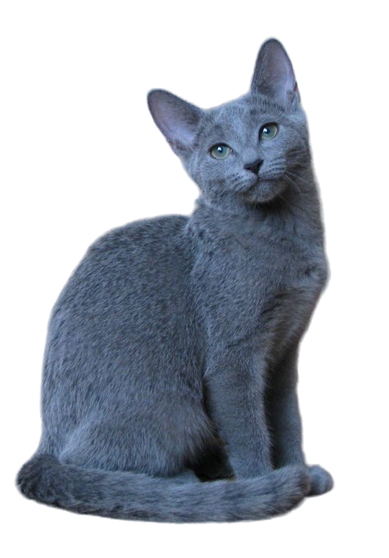

|

รัสเซียนบลูเป็นแมวขนาดกลางถึงใหญ่ มีรูปร่างเพรียวบาง งามสง่า และขาเรียวยาว มองผ่าน ๆ เหมือนเดินเขย่งปลายเท้าตลอดเวลา ส่วนหัวเป็นทรงสามเหลี่ยมกลับหัว พร้อมด้วยแผงหนวดที่โดดเด่นและใบหูขนาดใหญ่ ดวงตาของรัสเซียนบลูกลมโตคล้ายเมล็ดอัลมอนด์ ตั้งห่างกันและมีสีเขียวสดใส ขนของแมวพันธุ์นี้มีสองชั้น ขึ้นเรียงกันแน่นและสั้น ให้สัมผัสนุ่มละเอียด หากสัมผัสขนของรัสเซียนบลูแล้วจะรู้ว่าต่างจากสายพันธุ์อื่น และใช้เป็นเครื่องบ่งชี้สายพันธุ์นี้ได้อย่างแท้จริง แม้จะชื่อ “รัสเซียนบลู” แต่บางครั้งเราจะพบเห็นแมว “รัสเซียนแบล็ค” และ “รัสเซียนไวต์” ด้วยเช่นกัน ในกลุ่ม “รัสเซียนบลู” หรือรัสเซียสีน้ำเงินที่ได้รับความนิยมมากที่สุดนั้น สีขนด้านนอกจะออกเทาเหลือบน้ำเงินหรือเทาประกายเงิน
|